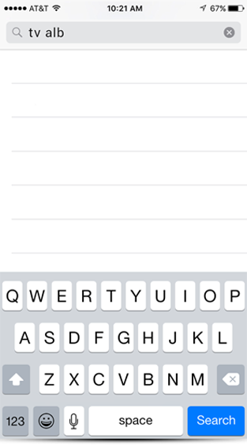
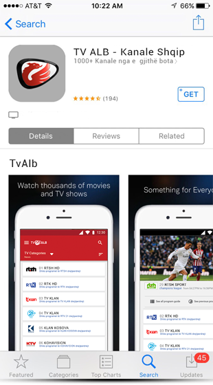

Shikoni kanalet tuaja të preferuara ku do që jeni dhe në gjdo kohë. Me aplikacionin e TvAlb per telefona të zgjuar dhe tablet në sistemin operativ iOS dhe Android mund të shikoni 1000+ kanale si do që të jetë lidhja e juaj e internetit: WiFi, 3G apo 4G.
Selekto opcionin i cili pershtatet paisjes tuaj Smart. Duke zgjedhur nje nga opcionet, shafeqen informatat me instruksione për instalim dhe perdorm.
Për ta përdorur aplikacionin android të TvAlb ju duhet ta keni të instaluar versionin e iOS 7.0 ose versionin më ti ri në paisjen tuaj. Praktikisht ju duhet te keni versionin me te ri të sistemit operativ iOS i cili ju rekomandohet për paisjen tuaj Smart. Në vazhdim ju tregojm hapat e detaizuara se si të aktivizoni Aplikacionin TvAlb.
Klikoni në Aplikacionin “App Store”. Në rubriken kërko ( Search ) shkruaj TvAlb.
Pasi shfaqet ikona e tvalb klikoni në rubriken GET dhe fillo instalimin e aplikacionit.
Për ta aktivizuar Aplikacionin TvAlb shkruani kodin të cilin e keni mare nga menagjeri i shitjes. Ju lutemi shkruni kodin.

Pasi klikoni ne opcionin VOD ne ekran shafet vidoteka e cila përmban me qindra filma, humore, programe muzikore etj.
Opcioni radio Opcioni Catchup ju mundëson të ktheheni 7 ditë mbrapa në kohë. Pra me kete opcion ju mund të shikoni përmbajtjen e kanaleve kryesore për 7 ditet e kaluara.
Guida progamore elektronike apo EPG ju mundëson të shikoni skemen programore të secilit kanal.